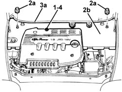

7025A14 Bonnet LID - R.R.
- Path
- Procedures > 70 FITTINGS > 7025 COMPARTMENT LIDS > 7025A bonnet lid > 7025A14 Bonnet LID - R.R.
- Kind
- repair procedure (removal / refitting; the operation number is the code)
- Applies to
- engines: 1.9 JTD 16V; all production periods
- Interactive page
- https://sloeber94.github.io/elrnDB-a147/en/#/3025752
Applies to: engines: 1.9 JTD 16V; all production periods
 Removing
Removing
 Refitting
Refitting7025A12 Engine front sound insulation COVER - R.R.
1. Remove the engine oil dipstick.
2. Undo the plastic nuts (2a) fixing the rear cover (2b).
3. Remove the rear cover (2b) releasing it from the rear gasket (3) and the side retainers.
4. Refit the engine oil dipstick.

Applies to: engines: 1.9 JTD 16V; all production periods
Refitting
RemovingCheck that the engine compartment cover is not damaged.
Remove the engine oil dipstick.
Place the rear cover in position and attach it to the side retainers and the rear gasket, then tighten the plastic nuts.
Refit the engine oil dipstick.
Topics linked from this page (1)
Topics that link to this page (80)
- 0010T64 brake and or clutch fluid check level and top up as necessary
- 0010T65 hydraulic brake system bleed air
- 1004B10 power unit with manual gearbox - r + r
- 1008C10 power unit upper reaction link r r
- 1008C16 body link bracket - r r
- 1016C10 cylinder head - r + r and replace gasket
- 1020D14 front crank shaft oil seal cover - r + r and replace seals for versions with oil pump on crank shaft, timing side
- 1028H10 connecting rod and piston set - r r
- 1032C30 fixed timing system tensioner - r + r with timing belt removed
- 1032D12 timing system protective cover(s) - r + r
- 1036C10 camshafts in cylinder head extension - r r - includes cylinder head extension replacement if necessary
- 1036L30 front oil seal of intake camshaft in cylinder head extension replace
- 1040B32 front fuel delivery line - r r
- 1040B54 fuel line from manifolds - r r
- 1044B10 fuel filter assembly - r + r or replace
- 1044B16 delivery adjustment valve - r r
- 1048A10 air cleaner filtering element - replace
- 1048A14 air cleaner filtering element - replace.
- 1048A23 cold air intake - r r
- 1048a52 air inlet pipe to turbo charger - r + r
- 1048b22 air delivery sleeve from heat exchanger to intake manifold - r + r
- 1060E40 supplementary pressure pump - r r
- 1060F50 fuel return manifold - r r
- 1060G14 engine coolant temperature sensor - r r
- 1060G16 pressure relief sensor - r r
- 1060G50 Electro-pneumatically controlled THROTTLE CASING - R.R.
- 1060G56 SOLENOID VALVE ON VACUUM RESERVOIR FOR THROTTLE CASING PNEUMATIC VALVE - R.R.
- 1060G58 CONNECTOR for air inlet hose on throttle casing - R.R.
- 1060G70 vacum tank for controlling engine air intake r r
- 1060G80 ds electric injection control unit - r r
- 1060G90 diesel injection wiring harness - r r
- 1064A28 SOLENOID VALVE FOR TURBOCHARGER VANE ACTUATOR - R.R.
- 1080D34 engine oil vapour separator - r + r
- 1084A16 oil dip stick pipe - r r
- 1088B10 engine cooling tank - r + r
- 1088B20 engine cooling radiator - r + r
- 1088C40 thermostat- r + r
- 1088D10 lower sleeve for coolant outlet from radiator - r + r
- 1088D14 upper sleeve for coolant inlet to radiator - r + r
- 1088D24 rigid pipe for coolant inlet to water pump - r + r
- 1088E10 radiator cooling fan - r + r
- 1088E20 resistor for radiator cooling fan - r + r
- 1820B30 OPERATING CYLINDER/CLUTCH HYDRAULIC ACTUATOR - R.R.
- 1820B40 FLEXIBLE PIPE from clutch reservoir to (pump) - master cylinder R.R.
- 1820B54 hose from damper - r r
- 1820B58 clutch hydraulic circuit vibration damper - r+r
- 2110C50 gear selection and engagement unit - r r
- 2125C70 gearbox/brake lever mount - r r
- 3330D26 Vacuum PIPE for brake servo assembly - R.R.
- 3330D30 vacuum pump - r+r
- 4130B32 power steering pump mount - r r
- 4130B34 supply pipe from fluid resevior to power steering pump r r
- 4130B40 outlet pipe from pump to power steering case r r
- 4410D13 front suspension beam - r r
- 4410D15 front suspension beam complete with wishbones and stabiliser bar r r
- 5040A20 air conditioner compressor - r+r - includes fluid level check and top up if necessary
- 5040A40 air conditioner condenser - r+r
- 5040A44 air conditioner dehydrating filter/accumulator - r+r
- 5040A60 pipe from condenser to evaporator (expansion pipe) - r+r
- 5040A73 compressor inlet pipe - r r
- 5040A76 tandem pipe for delivery and return from evaporator rr
- 5050A10 windscreen washer fluid reservoir (in engine bay) - r+r
- 5050A14 reservoir plug (in engine bay) or windscreen washer fluid level sensor - check and top up if necessary
- 5050B22 front and rear screen washer pump - r+r
- 5050D13 headlamp washer system types and fittings - r r
- 5050D20 headlamp washer pump - r+r
- 5505A13 supplementary junction control unit in engine bay - r r
- 5505A28 container of supplementary junction unit in engine bay - r r
- 5530B22 battery earth lead - r+r
- 5530B26 lead between battery and starter motor - r+r
- 5530B40 supply box on battery (link battery and fuse box) - r r
- 5540B22 l/h or r/h headlamp/light cluster bulb (one) - r+r
- 5540B26 bulb (one) for side lights of one headlamp/light cluster, l/h or r/h - r+r
- 5540B38 headlamp/light cluster light beam - position
- 5540B76 Front LIGHT CLUSTER with fog light (one), left or right - R.R. with interfering components removed
- 5540C24 motor (one) for l/h or r/h headlamp/light cluster alignment correction - r+r
- 5540D14 l/h or r/h fog lamp bulb (one) - r+r
- 7025A10 bonnet lid - square
- 7025A18 l/h or r/h bonnet lid hinge (one) - r+r with lid removed
- 7025A26 bonnet lid opening control - repair